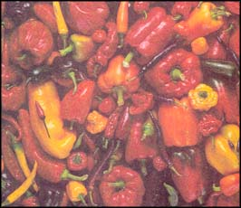

Issue # 178 - February/March 2000
When it comes to heirlooms, the taste's the thing.
That was my introduction to heirloom vegetables. Now, like thousands of other home gardeners, these old-time, open-pollinated varieties are all that I grow. Hybrids do not appear in my garden.
Whets wrong with hybrids? After all, haven't the seed companies been telling us for more than 50 years now that hybrids are the only way to go? Well, while it's true that anything you grow yourself will taste better than something you buy in the market, hybrid varieties are not designed to meet the needs of the home gardener. Rather, they are developed to meet the needs of monocultural factory farms and to best fit into the food distribution network. Among the traits fostered are resistance to certain diseases; the tendency to ripen simultaneously; uniformity of size, shape and color; and the hardiness to withstand the rigors of transportation, storage and display in markets. Taste is rarely a criterion. (For some notable exceptions, see " And The Winners Are... ")
Moreover, hybrids lock you into the seed supplier. W ho's got the seed controls the feed," says Gravel Switch, Kentucky, farmer Jeanne Lane. In this, she sums up one of the prime objections to hybrid varieties: since they don't breed "true" - that is, their seeds do not produce replicas of the parent - you have to keep buying them from the company that holds the patent. Not only does this marry you to a particular company, it leads to a diminishing number of available varieties.
Take tomatoes, for instance. While there are several dozen varieties available through seed catalogs - an impressive number at first glance - they barely - come dose to the 600 tomato varieties known to exist.
Nowadays, even where farmers are producing during several crop varieties for the market, these varieties are more often than not very nearly genetically identical. The resulting monoculture can lead to sometimes serious problems: for example, a new disease can easily wipe out the entire crop.
The most well-known example of this is the 1840s ' Irish potato famine. In her book Heirloom Vegetables, Sue Strickland observes: "The epidemic happened because all the varieties of potato growing in Europe at the time were derived from just two parent varieties. They produced reliable yields in the cool wet conditions of Northern Europe... but had never encountered blight, and so had no resistance to it."
Even in modern times, monoculture epidemics have destroyed crops of wheat, corn and rice in different parts of the world. In 1970 southern leaf blight all but destroyed the American corn crop. Many southern farmers lost all that they'd planted and 15% of the corn nationwide was infected with the disease.
Encouraging biodiversity is one of the driving forces behind the grassroots movement to save heritage varieties. Indeed, Seed Savers Exchange (SSE), the first and largest of the nonprofit associations that exist to promote the growing of heirloom varieties, was founded for this very reason. Kent Whealy and his wife, Diane, had inherited seeds from her grandfather - seeds that had been in the family since the 1800s when they were brought to Iowa from Bavaria. The Whealys started looking for other families who w ere keeping heirloom seeds, in order, as Kent puts it, "to increase the genetic diversity available to gardeners growing healthy food for their families." They soon found, he says, `a vast. almost unknown genetic treasure quietly being maintained by elderly gardeners and farmers." In 1975, the couple started SSE to promote the exchange of such varieties.
As the Whealys found out, there have always been small enclaves of people growing heritage vegetables. Mountainous and isolated regions are the richest sources of such seeds. But even individual families have continuously passed down seed's from one generation to the next.
In the 1970s and '80s, as part of a new wave of environmentalism, raising heirlooms became a worldwide movement. Several seed saving organizations sprang up, and small commercial growers started specializing in heirloom varieties. Today mainstream seed companies offer some heirlooms, although you have to search them out from among the hybrids, and even then commercial sources barely touch on the possibilities.
"Of the 250 mail-order seed companies, only about 15 concentrate on her itage and old-time varieties," says Craig Dremann, owner of Redwood City Seed Co. in Redwood City, California. Founded in 1971, Dremann's company is the oldest in America dedicated to heirloom variety seed pro duction. And yet his offerings, like those of competitors and mainstream seed companies, remain limited,
"There are about 6,500 historic varieties being grown," Dremann notes. "but only about 50% of them are available through commercial sources." Home gardeners get the rest through seed saving organizations, through informal networks and by searching for farmers and gardeners who have been growing heirlooms for generations.
Dremann and many other seed suppliers insist that the impetus behind the heirloom trend is neither environmental nor political; it's taste.
"People want the best tasting produce they can get," he stresses. "After doing all that work in the garden, why grow something that has no taste?"
Darrell "The Tomato Man" Merrell couldn't agree more. "I was looking for vegetables that had the flavor I remember as a kid," he says, "and started growing heirloom tomatoes for my own table." Now Merrell grows and sells heirloom tomato plants on a retail level in his hometown of Tulsa, Oklahoma, where he also founded the Sooner State Heirloom Seed S ociety. "I'd say 95% of people will not save seeds. But after tasting heirlooms, they will buy the plants or the actual veggies if they can find them." Merrell typically sells 20,000 heirloom plants annually, growing out 60 to 80 varieties each year.
Thus matter of taste cannot be stressed enough. Flavor is the criterion for heirloom varieties. Even market growers are discovering that people will pay a premium for veggies that taste like veggies. Joe Cavanaugh of Delaware, New Jersey, started Garden State Heirloom Seed Society to promote the idea that market gardeners can make money with heirlooms - either at farm stands, farmers markets or through retail establishments. He currently has 93 growers in his organization, and two supermarket chains have just agreed to stock their output. Similar organizations, modeled on Cavanaugh's, are starting up in Oklahoma, New York and Rhode Island.
But while the retail market for heirloom veggies continues to bloom, it is in the home garden that these varieties truly stand to find their niche - and not just because of their unbeatable taste. Heirlooms are perfect for your backyard plot; here's why:
Staggered ripening dates. Hybrids are designed to ripen more or less at the same time to facilitate mechanized harvesting. But for the home gardener, vegetables that ripen over time make more sense, as they are used on an ongoing basis.
Size, color and varietal choice. Hybrids are designed to have uniform color, size and shape. Any tomato that isn't red, for instance, is considered a "specialty" item. Similarly, all snap beans should be green, all eggplants black, etc. Not only is this lack of biodiversity dangerous, it encourages the belief that these are the only choices. Not so. Heirloom vegetables are available in an amazing number of varieties. In addition to the aforementioned 600 kinds of tomato there are dozens of choices among pole beans, a number of cucumber varietals, and every conceivable shape, size and color of squash.
What, exactly, is an heirloom vegetable? To qualify at all, a variety must be open-pollinated (i.e.. it must be pollinated naturally, without human help). In the absence of other varieties of the same species nearby, open-pollinated plants will breed true to type (i.e., seeds replicate the parent). This is not so with manufactured hybrids. Seed from a first-generation (FI) manufactured hybrid will either be sterile or will grow into a variety that looks nothing like the Fl, but rather is an odd mix of traits inherited from either or both of the Fl's parents. To be sure, hybrids can be stabilized so they grow true to type, but given that seed producers have a marked interest in insuring your annual seed purchases they seldom, if ever, are.
Technically, when two open-pollinated varieties cross, the result is a hybrid. But unlike the manufactured Fl types, these new varieties, through rouging and other growing technique, can be quickly stabilized - often in as little as two or three generations - and will then breed true to type (Rouging is the process of saving seed from only the best plants of a variety, as defined by the individual grower. He or she may choose only those plants that bear early, have the largest fruit or taste the sweetest. This process can be used over successive generations to train open-pollinated hybrids, thereby forming a new and predictable variety.)
Aside from being open-pollinated, the other defining traits of an heirloom are open to discussion. Most authorities apply the term to an open-pollinated variety that has been grown for at least 50 years. Craig Dremann, among others. believes this definition is too loose. He says an heirloom is an open-pollinated variety that is not commercially available, and prefers terms like "heritage," "historic," "old-fashioned" and "traditional" to describe old, open-pollinated varieties that can be bought through seed sellers. "We don't want any old variety to be called an heirloom," he says. If you actually acquire an heirloom, you take on the responsibility of keeping it going."
Perhaps the best definition is provided by Benjamin Watson in his book Taylor's Guide to HeirloomVegetables. Watson uses three criteria:
1) The variety must be able to reproduce itself from seed. That is to say, it is standard or open-pollinated variety.
2) The variety must have been introduced more than 50 years ago, This would include those varieties recently introduced by seed companies, but which were previously unavailable through the seed trade. Instead, they w ere preserved over the years by families or by ethnic, religious or tribal groups who handed down the seeds win generation to generation.
3) The variety must have a history of its own. Perhaps the variety was brought to America by immigrants, or saved and improved over the years by a single family or a religious group such as the Amish. Perhaps it figured importantly as a staple or ceremonial crop for indigenous peoples. Or it has simply become well-suited to the climate and growing conditions of a particular region.
The heirloom vegetable hobby is filled with stories of great rediscoveries. Take the Anasazi bean, a meaty, red-and-white mottled legume from the Southwest, once long-lost lint now grown even commercially. Legend has it that Anasazi beans were rediscovered by archeologists on a dig sometime during the early decades of this century. The beans had lain dormant for 400 years, but still germinated.
As dramatic as such tales can be they leave Craig Dremann cold. He,. along with thousands of other heirloom growers. are more impressed with "true" heirlooms, those that have been passed down, one generation to the next. "That is the more exciting thing," he stresses. "That somebody has been growing these varieties continuously for maybe 2,000 years."
For all their appeal, these are some challenges that come with growing heirlooms. For starters, they are with rare exception fertilized by wind or insects. This means that if you grow more than one variety of a species, there is the danger of cross-fertilization, unless you separate them by quite some distance - often far more space than a home gardener has. With some species, a mile or more is the recommended separation.
Alternatively, you can use various isolation techniques to assure purity. Covering plants with screened boxes is a common method. Plants of different varieties are exposed on alternate days, thus ensuring that insects do not cross-fertilize them. This strategy is often used with peppers and similar species.
Bagging is another approach, often used for crops like corn. The entire bloom is covered with a paper bag to isolate it from insects or wind. This requires. however, that you hand-pollinate the flowers - most easily done with a soft paintbrush.
Taping blossoms dosed is yet another technique, most often used with squashes. Here, again, hand-pollinating is necessary, clip the very tips of the blossoms, pollinate them with a paintbrush and tape them closed. When pollinating squashes it is best to use male and female blossoms from different vines.
Isolation is only a factor if you intend to save seed. The variety you plant will bear fruits true to type, even if they crossbreed. If there has been a cross, however, the seeds from those plants will not grow true. Many times, the new variety will itself be appealing, but it won't be what you expected.
With some notable exceptions, seed from open-pollinated plants is only viable for a year. That means the seed you save from this year's crop should be planted next year. Germination rates fall off very rapidly after that, in some cases dropping as much as 75% the second year. There are methods for extending the viability of the seed (freezing being one of them). but in general you need to either grow the seed the second year or share it with somebody who will. That's one of the strongest reasons for joining a seed saving organization.
Finally, perhaps the biggest problem with heirlooms is that they may lack the resistance to disease and insect infestation found in the hybrids. This is especially true it the variety is being planted outside its traditional region. An heirloom passed down through generations within a particular geographic area adapts to the dangers of that area and it may be very resistant to a certain indigenous rust or wilt. However, when you move it out of that region, it may not be able to resist the dangers - or withstand the weather - found elsewhere.
Rouging over a period of years solves this problem. By choosing seed from the best plants, you will soon have a variety that has adapted to your local conditions.
|
 BRUCE FRITZ/SEED SAVERS EXCHANGE |
Right, Chioggia beets, first planted in the U.S. in the 1840s; above, Dragon's Tongue wax beans.KENT WHEALY/SEED SAVERS EXCHANGE |
|
|
|
|
|
|
|
|
|